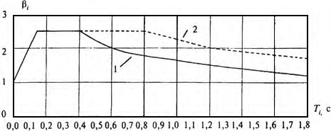

СП 358.1325800.2017 «Сооружения гидротехнические. Правила проектирования и строи»
О документе: разработчики, утверждение, регистрация, ключевые слова
СВОД ПРАВИЛ
СП 358.1325800.2017
Издание официальное
1 ИСПОЛНИТЕЛИ - Акционерное общество «Всероссийский научноисследовательский институт гидротехники имени Б.Е. Веденеева» (АО «ВНИИГ им. Б.Е. Веденеева») при участии «Центра службы геодинамических наблюдений в энергетической отрасли» (ЦСГНЭО) - филиала АО «Институт Гидропроект»
- 2 ВНЕСЕН Техническим комитетом по стандартизации ТК 465 «Строительство»
- 3 ПОДГОТОВЛЕН к утверждению Департаментом градостроительной деятельности и архитектуры Министерства строительства и жилищнокоммунального хозяйства Российской Федерации (Минстрой России)
- 4 УТВЕРЖДЕН приказом Министерства строительства и жилищнокоммунального хозяйства Российской Федерации от 26 декабря 2017 г. № 1720/пр и введен в действие с 27 июня 2018 г.
- 5 ЗАРЕГИСТРИРОВАН Федеральным агентством по техническому регулированию и метрологии (Росстандарт)
- 6 ВВЕДЕН ВПЕРВЫЕ
В случае пересмотра (замены) или отмены настоящего свода правил соответствующее уведомление будет опубликовано в установленном порядке. Соответствующая информация, уведомление и тексты размещаются также в информационной системе общего пользования - на официальном сайте разработчика (Минстрой России) в сети Интернет
© Минстрой России, 2017
Настоящий нормативный документ на может быть полностью или частично воспроизведен, тиражирован и распространен в качестве официального издания на территории Российской Федерации без разрешения Минстроя России
Дата введения - 2018-06-27
УДК 627.8.012.4 (083.74) ОКС 93.160
Ключевые слова: гидротехнические сооружения, сейсмостойкость сооружений, расчетная сейсмичность, максимальное расчетное землетрясение, проектное землетрясение, ускорение основания, акселерограммы, динамическая теория, линейно-спектральная теория, присоединенная масса воды, расчеты, конструкции, геодинамические наблюдения
| Руководитель организации-разработчика ЗАО «ПРОМТРАНСНИИПРОЕКТ» Директор | В.А. Сидяков |
|---|---|
| Руководитель разработки Заместитель директора по науке | Л.А. Андреева |
| Исполнитель Начальник отдела Комплексных исследований, стандартизации и логистического сопровождения проектов | И.П. Потапов |
| СОИСПОЛНИТЕЛЬ: АО «ВНИИГ им. Б.Е. Веденеева» Советник генерального директора - научный руководитель, д.т.н. | В.Б. Глаговский |
| Руководитель разработки советник генерального директора, к.т.н. | А.П. Пак |
| Ответственный исполнитель вед. научн. сотр., к.т.н. | М.С. Ламкин |
Введение
Настоящий свод правил составлен с учетом требований федеральных законов от 27 декабря 2002 г. № 184-ФЗ «О техническом регулировании», от 29 декабря 2009 г. № 384-Ф3 «Технический регламент о безопасности зданий и сооружений», от 23 ноября 2009 г. № 261-ФЗ «Об энергосбережении и о повышении энергетической эффективности и о внесении изменений в отдельные законодательные акты Российской Федерации».
Работа выполнена авторским коллективом Акционерного общества «Всероссийский научно-исследовательский институт гидротехники имени Б.Е Веденеева» (АО «ВНИИГ им. Б.Е. Веденеева») (д-р техн. наук Е.Н. Беллендир , д-р техн. наук В.Б. Глаговский , д-р техн. наук А.А. Храпков, канд. техн. наук А.П. Пак, канд. техн. наук М.С. Ламкин ) при участии «Центра службы геодинамических наблюдений в электроэнергетической отрасли» (ЦСГНЭО) - филиала АО «Институт Гидропроект» (д-р физ.-мат. наук А.И. Савич , канд. техн. наук В.В. Речицкий , канд. физ.-мат. наук А.Г. Бугаевский, канд. геол.минерал. наук А.Л. Стром ).
1Область применения
Настоящий свод правил распространяется на проектирование, строительство новых и реконструируемых напорных и безнапорных гидротехнических сооружений в сейсмических районах.
Настоящий свод правил распространяется на следующие гидротехнические сооружения: плотины, дамбы, водоприемники, поверхностные и донные водосбросы, каналы, гидротехнические туннели, напорные трубопроводы, сооружения на деривационных трактах, шлюзы, судоподъемники, направляющие и причальные сооружения, рыбопропускные сооружения, берегоукрепительные сооружения, причальные пирсы и стенки, волноломы, доки, подземные сооружения гидроэлектрических станций, гидротехнические сооружения тепловых и атомных станций, а также на сооружения, возводимые на шельфе.
2Нормативные ссылки
В настоящем своде правил использованы нормативные ссылки на следующие документы:
- СП 14.13330.2014 «СНиП II-7-81* Строительство в сейсмических районах» (с изменением № 1)
- СП 23.13330.2011 «СНиП 2.02.02-85* Основания гидротехнических сооружений» (с изменением № 1)
- СП 39.13330.2012 «СНиП 2.06.05-84* Плотины из грунтовых материалов» (с изменением № 1)
- СП 40.13330.2012 «СНиП 2.06.06-85 Плотины бетонные и железобетонные»
- СП 41.13330.2012 «СНиП 06.08-87 Бетонные и железобетонные конструкции гидротехнических сооружений»
- СП 58.13330.2012 «СНиП 33-01-2003 Гидротехнические сооружения. Основные положения» (с изменением № 1)
Правила проектирования и строительства в сейсмических районах
Hydraulic structures. Rules of design and construction in seismic-prone regions
Примечание - При пользовании настоящим сводом правил целесообразно проверить действие ссылочных документов в информационной системе общего пользования -на официальном сайте федерального органа исполнительной власти в сфере стандартизации в сети Интернет или по ежегодному информационному указателю «Национальные стандарты», который опубликован по состоянию на 1 января текущего года, и по выпускам ежемесячного информационного указателя «Национальные стандарты» за текущий год. Если заменен ссылочный документ, на который дана недатированная ссылка, то рекомендуется использовать действующую версию этого документа с учетом всех внесенных в данную версию изменений. Если заменен ссылочный документ, на который дана датированная ссылка, то рекомендуется использовать версию этого документа с указанным выше годом утверждения (принятия). Если после утверждения настоящего свода правил в ссылочный документ, на который дана датированная ссылка, внесено изменение, затрагивающее положение, на которое дана ссылка, то это положение рекомендуется применять без учета данного изменения. Если ссылочный документ отменен без замены, то положение, в котором дана ссылка на него, рекомендуется применять в части, не затрагивающей эту ссылку. Сведения о действии сводов правил целесообразно проверить в Федеральном информационном фонде стандартов.
3Термины, определения и сокращения
В настоящем своде правил применены термины по СП 14.13330, а также следующие термины с соответствующими определениями:
- 3.1.1 временнóй анализ
- Метод расчета, в котором для каждой из точек наблюдения искомые параметры (смещения, деформации, напряжения и т. д.) определяются на всем временнóм интервале, отвечающем процессу прохождения сейсмической волны.
- 3.1.2 детальное сейсмическое районирование; ДСР (здесь)
- Комплекс сейсмологических и сейсмотектонических исследований по оценке сейсмической опасности методами, позволяющими на рассматриваемой территории обеспечить выделение зон возникновения очагов землетрясений более низких рангов по сравнению с зонами, выделяемыми при общем сейсмическом районировании. Масштаб карт ДСР - 1:500 000 - 1:200 000.
- 3.1.3 инструментальный метод сейсмического микрорайонирования; СМР
- Метод учета влияния локальных особенностей строения и свойств верхней части грунтовой толщи основания на интенсивность сотрясения и кинематические параметры землетрясения на районируемой площадке с помощью прямых сейсмометрических наблюдений.
- 3.1.4 интенсивность землетрясения
- Оценка воздействия землетрясения в баллах действующей макросейсмической шкалы, определяемая по макросейсмическим описаниям разрушений и повреждений природных объектов, грунта, зданий и сооружений, движений тел, а также по наблюдениям и ощущениям людей.
- 3.1.5 исходная сейсмичность
- Сейсмичность площадки гидротехнического сооружения, определяемая для нормативных периодов повторяемости и средних грунтовых условий с помощью ДСР или уточнения исходной сейсмичности (или принятая равной нормативной сейсмичности).
- 3.1.6 линейный временнóй анализ
- Временнóй анализ, при котором материалы сооружения и грунты основания принимаются линейно-упругими, а геометрическая и конструктивная нелинейности в поведении системы «сооружение - основание» отсутствуют.
- 3.1.7 магнитуда
- Энергетическая оценка землетрясения, относящаяся к его очагу и не зависящая от пункта наблюдения; вычисляется по показаниям сейсмографов и выражается безразмерной величиной в целых и десятичных числах в логарифмической шкале.
- 3.1.8 максимальное расчетное землетрясение; МРЗ
- Землетрясение (сейсмическое воздействие) максимальной интенсивности на площадке строительства со средней повторяемостью один раз в 5000 лет для водоподпорных сооружений классов I, II и III и морских нефтегазопромысловых сооружений и повторяемостью один раз в 1000 лет для всех остальных гидротехнических сооружений.
- 3.1.9 метод расчета по динамической теории (метод расчета по ДТ)
- Метод расчета на воздействие, заданное в форме акселерограмм колебаний грунта в основании сооружения, путем численного интегрирования уравнений движения.
- 3.1.10 метод расчета по линейно-спектральной теории (метод расчета по ЛСТ)
- Метод расчета на сейсмостойкость, в котором значения сейсмических нагрузок определяются по коэффициентам динамичности (или по спектрам отклика) в зависимости от частот и форм собственных колебаний конструкции.
- 3.1.11 метод расчета по статической теории (метод расчета по СТ)
- Метод расчета на сейсмостойкость, в котором значения сейсмических нагрузок определяются произведением массы конструкции (или рассматриваемого объема грунта) на абсолютное ускорение этой конструкции (или указанного объема грунта).
- 3.1.12 нелинейный временнóй анализ
- Временнóй анализ, при котором учитывается зависимость механических характеристик материалов сооружения и грунтов основания от уровня напряжений и характера динамического воздействия, а также возможны геометрическая и конструктивная нелинейности в поведении системы «сооружение -основание».
- 3.1.13 нормативная сейсмичность
- Сейсмичность района нахождения гидротехнического сооружения, определяемая для нормативных периодов повторяемости расчетного землетрясения по картам ОСР-2015.
- 3.1.14 общее сейсмическое районирование; ОСР
- Оценка сейсмической опасности на территории всей страны, принимаемая в качестве нормативной сейсмичности районов. Масштаб карт ОСР - 1:2 500 000 - 1:8 000 000.
- 3.1.15 проектное землетрясение; ПЗ
- Землетрясение (сейсмическое воздействие) максимальной интенсивности на площадке строительства с повторяемостью один раз в 500 лет для всех гидротехнических сооружений.
- 3.1.16 расчетный метод сейсмического микрорайонирования (расчетный метод СМР)
- Метод учета влияния локальных особенностей строения и свойств верхней части грунтовой толщи основания на интенсивность сотрясений и кинематические параметры землетрясения на районируемой площадке, основанный на полуэмпирических соотношениях и (или) теоретических расчетах прохождения сейсмических волн через модель слоистой среды, построенную по данным инженерно-геологических и инструментальных геофизических исследований.
- 3.1.17 сейсмический район
- Район с установленными и возможными очагами землетрясений, вызывающими на площадке гидротехнического сооружения сейсмические воздействия интенсивностью 6 баллов и более.
- 3.1.18 сейсмическое микрорайонирование; СМР
- Комплекс инженерно-геологических и сейсмометрических работ по прогнозированию влияния особенностей строения приповерхностной части разреза (строение и свойства, состояние пород, характер их обводненности, рельеф и т. п.) на сейсмический эффект и параметры колебаний грунта на площадке. Под приповерхностной частью разреза понимается верхняя толща пород, существенно влияющая на интенсивность землетрясения. Как правило, масштаб карт СМР - 1:10 000-1:2 000. Масштаб СМР устанавливается заданием на проектирование.
- 3.1.19 сейсмическое районирование ( здесь )
- Картирование сейсмической опасности (определение сейсмичности рассматриваемых территорий) с помощью комплекса сейсмологических, геологических и геофизических методов и основанное на выявлении зон возможных очагов землетрясений и определении сейсмического эффекта, создаваемого ими на земной поверхности.
- 3.1.20 сейсмичность площадки сооружения (строительства)
- Интенсивность расчетных сейсмических воздействий на площадке строительства с соответствующими категориями повторяемости за нормативный срок. Сейсмичность устанавливается в соответствии с картами сейсмического районирования и СМР площадки строительства и измеряется в баллах по действующей макросейсмической шкале.
- 3.1.21 спектр отклика однокомпонентной акселерограммы
- Функция, связывающая между собой максимальное по модулю ускорение одномассового линейного осциллятора и соответствующий этому ускорению период (либо частоту) собственных колебаний того же осциллятора, основание которого движется по закону, определенному данной акселерограммой.
- 3.1.22 уточнение (определение) исходной сейсмичности; УИС ( здесь )
- Комплекс сейсмологических и сейсмотектонических исследований, выполняемых в составе инженерных изысканий для определения возможных сейсмических воздействий, в том числе в инженерных терминах, на конкретные существующие и проектируемые сооружения повышенного уровня ответственности.
- В настоящем своде правил применены следующие сокращения
- ВСНФ - водоподпорное сооружение в составе напорного фронта; ГТС - гидротехническое сооружение; ГЭС - гидроэлектростанция; зона ВОЗ - зона возможных очагов землетрясений; КИА - контрольно-измерительная аппаратура; ЛСС - локальная сейсмологическая сеть; МНГС - морское нефтегазопромысловое сооружение; РА - расчетная акселерограмма; УГВ - уровень грунтовых вод.
4Общие положения. Определение нормативной, исходной и расчетной сейсмичности
- выполнение комплекса расчетов по оценке прочности и устойчивости сооружений и их элементов с учетом взаимодействия ГТС с основанием и водохранилищем;
- применение конструктивных решений и материалов, повышающих сейсмостойкость ГТС;
- проведение на стадии проектирования водоподпорных сооружений классов I и II и МНГС исследований с задачей установления исходной и расчетной сейсмичности площадки строительства, наличия опасных процессов и явлений, связанных с сейсмичностью, определения расчетных сейсмических воздействий, получение, при необходимости, набора акселерограмм для этих воздействий;
- включение в проекты водоподпорных сооружений классов I и II отдельного раздела о проведении в процессе эксплуатации сооружения мониторинга опасных геодинамических явлений;
- обследование состояния ГТС и их оснований после каждого перенесенного землетрясения интенсивностью 5 баллов и более.
Гидротехнические сооружения должны воспринимать МРЗ без угрозы собственного разрушения, в том числе ВСНФ всех классов - без угрозы прорыва напорного фронта, а МНГС - без угрозы собственного разрушения и без угрозы повреждений, приводящих к выбросу в окружающую среду углеводородов.
Сейсмические воздействия уровня ПЗ должны восприниматься ГТС без угрозы для жизни и здоровья людей и с сохранением собственной ремонтопригодности (для ВСНФ - при любом предусмотренном правилами эксплуатации уровне верхнего бьефа). При этом допускаются остаточные смещения, деформации, трещины и иные повреждения.
Примечание - Морские портовые причальные сооружения классов I и II, а также оградительные сооружения класса I рассчитывают на два уровня сейсмических воздействий. Остальные портовые безнапорные сооружения допускается рассчитывать только на сейсмические воздействия уровня ПЗ.
- ОСР-С -- при расчете на МРЗ водоподпорных сооружений классов I, II и III;
- ОСР-В - при расчете на МРЗ водоподпорных сооружений класса IV и безнапорных ГТС;
- ОСР-А - при расчете на ПЗ ГТС всех классов и видов.
Исходную сейсмичность площадок других ГТС допускается принимать равной:
- при расчете на МРЗ:
- для ВСНФ класса III - значению величины nor I 5000 (карта ОСР-С);
- для ВСНФ класса IV и безнапорных ГТС - значению величины nor I 1000 (карта ОСР-В);
- при расчете на ПЗ для ГТС всех классов и видов - значению величины nor I 500 (карта ОСР-А).
В случаях, когда нормативная сейсмичность района для требуемого периода повторяемости превышает 9 баллов, исходную сейсмичность площадки ГТС независимо от вида и класса ГТС следует определять на основе ДСР или УИС, при этом необходимо учитывать 4.8.
Расчетную сейсмичность принимают для уровней МРЗ и ПЗ.
Для ВСНФ классов I и II и МНГС исследования СМР следует выполнять инструментальными и расчетными методами, а для других ГТС допускается применять результаты инженерно-геологических и геофизических изысканий на площадке ГТС.
Расчетную сейсмичность площадок безнапорных ГТС всех классов, а также при соответствующем обосновании - подпорных ГТС класса IV допускается принимать по таблице 4.1 с использованием результатов инженерно-геологических изысканий на площадке ГТС.
Таблица 4.1 Расчетная сейсмичность площадки сооружения
| Категория грунта по сейсмическим свойствам | Описание грунта | Расчетная сейсмичность площадки ГТС при исходной сейсмичности площадки, баллы | Расчетная сейсмичность площадки ГТС при исходной сейсмичности площадки, баллы | Расчетная сейсмичность площадки ГТС при исходной сейсмичности площадки, баллы | Расчетная сейсмичность площадки ГТС при исходной сейсмичности площадки, баллы | Расчетная сейсмичность площадки ГТС при исходной сейсмичности площадки, баллы |
|---|---|---|---|---|---|---|
| 6 | 7 | 8 | 9 | 10 | ||
| I | Скальные грунты всех видов (в том числе многолетнемерзлые в мерзлом и талом состоянии) невыветрелые и слабовыветрелые; крупнообломочные грунты плотные маловлажные из магматических пород, содержащие до 30 %песчано-глинистого заполнителя; выветрелые и сильновыветрелые скальные и нескальные твердомерзлые (многолетнемерзлые) грунты при температуре минус 2 С и ниже при строительстве и эксплуатации по принципу I (сохранение грунтов основания в мерзлом состоянии); скорость распространения поперечных волн V s > 700 м/с; соотношение скоростей продольных и поперечных волн V p / V s =1,7-2,2 вне зависимости от степени водонасыщения | - | - | 7 | 8 | 9 |
| II | Скальные грунты выветрелые и сильновыветрелые, в том числе многолетнемерзлые, кроме отнесенных к категории I; крупнообломочные грунты, за исключением отнесенных к категории I; пески гравелистые, крупные и средней крупности плотные и средней плотности маловлажные и влажные; пески мелкие и пылеватые плотные и средней плотности маловлажные; пылевато-глинистые грунты с показателем текучести I L 0,5 при коэффициенте пористости е < 0,9 - для глин и суглинков и е < 0,7 - для супесей; многолетнемерзлые нескальные грунты пластичномерзлые или сыпучемерзлые, а также твердомерзлые при температуре выше минус 2 C при строительстве и эксплуатации по принципу I; V s = 250-700 м/с; V p / V s = 1,7-2,2 для неводонасыщенных грунтов; V p / V s = 2,2-3,5 для водонасыщенных грунтов | - | 7 | 8 | 9 | Св. 9 |
| III | Пески рыхлые независимо от степени влажности и крупности; пески гравелистые, крупные и средней крупности плотные и средней плотности водонасыщенные; пески мелкие и пылеватые плотные и средней плотности влажные и водонасыщенные; пылевато-глинистые грунты с показателем текучести I L > 0,5; пылевато-глинистые грунты с показателем текучести I L 0,5 при коэффициенте пористости е 0,9 - для глин и суглинков и е 0,7 - для супесей; многолетнемерзлые нескальные грунты при | 7 | 8 | 9 | Св. 9 | Св. 9 |
| строительстве и эксплуатации по принципу II (допущение оттаивания грунтов основания); V s < 250 м/с; V p / V s = 1,7-3,5 для неводонасыщенных грунтов; V p / V s > 3,5 для водонасыщенных грунтов |
Как при СМР, так и при инженерно-геологических изысканиях глубину слоя исследования сейсмических свойств грунта следует определять, исходя из особенностей геологического строения площадки, но не менее 40 м от подошвы сооружения (для сооружений классов III и IV, не входящих в состав напорного фронта, - не менее 30 м).
Категорию грунта и его физико-механические и сейсмические характеристики следует определять с учетом возможных техногенных изменений свойств грунтов в процессе строительства и эксплуатации сооружения.
В случаях, когда расчетную сейсмичность площадки определяют методами СМР, дополнительно следует устанавливать скоростные, частотные и резонансные характеристики грунта основания ГТС.
Примечания
1 В случаях, когда площадки ГТС сложены грунтами, по своему составу занимающими промежуточное положение между грунтами категорий I и II или II и III (например, основание сооружения представлено слоистыми грунтами), дополнительно к категориям грунта, указанным в таблице 4.1, допускается введение категорий I-II и II-III соответственно. При этом расчетную сейсмичность площадки des I при грунтах категории I-II принимают как при грунтах категории II, а при грунтах категории II-III - как при грунтах категории III.
2 На период нахождения водохранилища в опорожненном состоянии (например, в строительный или ремонтный периоды) расчетную сейсмичность площадки водоподпорных ГТС при соответствующем обосновании допускается понижать на 1 балл.
В случае размещения этих объектов на ГТС или в контакте с ними сейсмическое воздействие должно задаваться движением, передаваемым со стороны основного сооружения.
5Сейсмические воздействия и определение их характеристик
Примечание - Сейсмические воздействия входят в состав особых сочетаний нагрузок и воздействий (СП 58.13330).
- 5000 лет - для водоподпорных сооружений классов I, II и III;
- 1000 лет - для МНГС, водоподпорных сооружений класса IV и безнапорных ГТС.
Значение среднего периода повторяемости ПЗ OBE ret T для всех ГТС принимают равным 500 лет.
Примечание - Для морских портовых причальных сооружений классов I и II, а также для оградительных сооружений класса I, рассчитываемых на два уровня сейсмических воздействий, допускается принимать SEE ret T = 500 лет и OBE ret T = 100-200 лет. Для остальных портовых безнапорных сооружений, относительно которых принято решение рассчитывать только на ПЗ, допускается принимать OBE ret T = 100-200 лет.
- при ПЗ. Следует подбирать РА также с учетом данных о скоростных, частотных и резонансных характеристиках грунтов, залегающих в основании сооружения. Непосредственно для расчетов следует задавать две горизонтальные (Г1 и Г2 ) и вертикальную (В ) компоненты РА.
Следует применять РА:
- из числа записей, произведенных на площадке или в районе сооружения;
- аналоговые из числа записей, сделанных в районах, сходных с районом площадки строительства по сейсмотектоническим, геологическим и другим сейсмологическим условиям;
- синтезированные, сформированные в соответствии с указанными ниже расчетными параметрами сейсмического воздействия (для МРЗ и ПЗ соответственно):
- общая длительность сейсмических колебаний τ SEE или τ OBE ;
- длительность фазы сейсмических колебаний основания τ 0,5 𝑆𝐸𝐸 (τ 0,3 𝑆𝐸𝐸 ) или τ 0,5 𝑂𝐵𝐸 (τ 0,3 𝑂𝐵𝐸 ) ;
- период колебаний с максимальным пиковым ускорением SEE T max или OBE T max ;
- преобладающий период колебаний 𝑇 0,5 𝑆𝐸𝐸 (𝑇 0,3 𝑆𝐸𝐸 ) или 𝑇 0,5 𝑂𝐵𝐸 (𝑇 0,3 𝑂𝐵𝐸 ) .
При этом спектр отклика синтезированной акселерограммы не должен быть ниже огибающей спектров отклика отобранных аналоговых акселерограмм во всем диапазоне учитываемых частот сейсмических колебаний.
Приведенные параметры следует задавать в виде своих компонент Г1, Г2 и В.
Примечание - Объем и состав сейсмологических и сейсмотектонических исследований окончательно устанавливает проектно-изыскательская организация и согласовывает заказчик.
Для ВСНФ классов III и IV и безнапорных ГТС значения пиковых ускорений SEE p a и OBE p a следует принимать не менее значений, указанных в 6.7.
- распределенные по объему сооружения и его основания (а также боковых засыпок и наносов) инерционные силы ) , ( t x P интенсивностью
где ρ( x ) - плотность материала в точке наблюдения x с координатами (в общем случае) x 1 , x 2 , x 3 по осям 1, 2, 3 соответственно;
) , ( t x U - вектор ускорения точки x в момент времени t в абсолютном движении системы «сооружение-основание»;
- распределенное по поверхности контакта сооружения с водой гидродинамическое давление, вызванное инерционным влиянием колеблющейся с сооружением части жидкости;
- гидродинамическое давление, вызванное возникшими при землетрясении волнами на поверхности водоема.
В необходимых случаях учитывают взаимные подвижки блоков в основании сооружения, вызванные прохождением сейсмических волн через неоднородное основание.
Учитывают также возможные последствия таких связанных с землетрясениями явлений, как:
- смещения по активным тектоническим разломам;
- проседание грунта;
- обвалы и оползни в створе сооружения в зоне водохранилища, а также в нижнем и верхнем бьефах гидроузла, если в этих случаях они способны вызвать подтопление здания ГЭС и прорывные паводки большого объема;
- разжижение грунта.
Отказ от учета инерционных свойств основания допускается при специальном обосновании.
6Расчетные сейсмические воздействия. Требования к расчетам гидротехнических сооружений на сейсмические воздействия
При расчете сооружения на действие МРЗ в особое сочетание нагрузок и воздействий включают нагрузку от сейсмического воздействия интенсивностью, отвечающей МРЗ. При этом оценку прочности и устойчивости следует выполнять в соответствии с 4.3. В этих случаях допускается принимать для всех сооружений значение коэффициента надежности по ответственности сооружения, равное 1,10.
При расчете сооружения на действие ПЗ в особое сочетание нагрузок и воздействий включают нагрузку от сейсмического воздействия интенсивностью, отвечающей ПЗ. При этом оценку прочности и устойчивости выполняют с применением критериев, принятых в нормативных документах на проектирование ГТС отдельных видов и соответствующих требованиям, предъявляемым к сооружениям при расчете их на ПЗ (4.3).
Для оценки сейсмостойкости ГТС допускается также использовать методы математической теории надежности (приложение Б).
Безнапорные ГТС допускается рассчитывать методами ЛСТ.
Примечания
1 Перечень сооружений, относящихся к ВСНФ, может быть расширен по усмотрению проектной организации за счет зданий ГЭС, напорных трубопроводов большого диаметра и иных объектов, разрушение которых по своим последствиям идентично прорыву напорного фронта.
2 При выборе оптимальных проектных решений для опорных блоков МНГС оценку характера взаимодействия с грунтовыми основаниями допускается выполнять с использованием методов ЛСТ и СТ.
Временнóй динамический анализ (линейный и нелинейный) проводят в рамках динамической теории упругости с применением пошагового интегрирования рассматриваемых уравнений.
Линейный динамический анализ допускается выполнять также методом разложения решения в ряд по формам собственных колебаний сооружения.
В случае применения линейного динамического анализа максимальные и минимальные значения смещений (деформаций, напряжений и усилий) за весь рассматриваемый временнóй интервал следует алгебраически суммировать со значениями указанных величин от остальных факторов, образующих рассматриваемое особое сочетание нагрузок и воздействий.
Примечания
1 В качестве исходного сейсмического воздействия допускается задавать также велосиграммы либо сейсмограммы.
- 2 В расчетах сейсмостойкости протяженных ГТС (бетонные плотины, грунтовые плотины и дамбы) с применением линейного динамического анализа при соответствующем обосновании допускается использование методик, учитывающих неравномерное движение основания по длине сооружения при прохождении сейсмической волны.
Значения соответствующих ускорений ( SEE p a при расчете сооружений на МРЗ и OBE p a при расчете сооружений на ПЗ) для сооружений со сроком службы Tsek более 50 лет не должны быть меньше определяемых по нижеследующим формулам:
- при расчете на МРЗ:
- ВСНФ классов I и II
ВСНФ класса III
- при расчете на ПЗ:
ВСНФ классов I и II и МНГС
ВСНФ класса IV и безнапорных сооружений
ВСНФ класса III
МНГС, ВСНФ класса IV и безнапорных ГТС
В формулах (2)-(7) A 500 , A 1000 и A 5000 - значения параметров расчетных ускорений основания в долях g ( g = 9,81 м/с 2 ), определенные для землетрясений с расчетными периодами повторяемости 500 ret T , 1000 ret T и 5000 ret T соответственно. Значения параметров расчетных ускорений A 500 , A 1000 и A 5000 в зависимости от значения исходной сейсмичности площадки строительства I bg , расчетной сейсмичности I des и реальных грунтовых условий на данной площадке ГТС приведены в таблице 6.1.
Таблица 6.1 - Значения параметров расчетных ускорений A
| Категория | I bg , баллы | I bg , баллы | I bg , баллы | I bg , баллы | I bg , баллы | I bg , баллы | I bg , баллы | I bg , баллы | I bg , баллы | I bg , баллы |
|---|---|---|---|---|---|---|---|---|---|---|
| грунта | 6 | 6 | 7 | 7 | 8 | 8 | 9 | 9 | 10 | 10 |
| I des , баллы | A | I des , баллы | A | I des , баллы | A | I des , баллы | A | I des , баллы | A | |
| I | - | - | - | - | 7 | 0,12 | 8 | 0,24 | 9 | 0,48 |
| I-II | - | - | 7 | 0,08 | 8 | 0,16 | 9 | 0,32 | - | - |
| II | - | - | 7 | 0,10 | 8 | 0,20 | 9 | 0,40 | - | - |
| II-III | 7 | 0,06 | 8 | 0,13 | 9 | 0,25 | - | - | - | - |
| III | 7 | 0,08 | 8 | 0,16 | 9 | 0,32 | - | - | - | - |
| Примечания 1 I bg имеет значения: bg bg bg I I I 5000 1000 500 , и . | Примечания 1 I bg имеет значения: bg bg bg I I I 5000 1000 500 , и . | Примечания 1 I bg имеет значения: bg bg bg I I I 5000 1000 500 , и . | Примечания 1 I bg имеет значения: bg bg bg I I I 5000 1000 500 , и . | Примечания 1 I bg имеет значения: bg bg bg I I I 5000 1000 500 , и . | Примечания 1 I bg имеет значения: bg bg bg I I I 5000 1000 500 , и . | Примечания 1 I bg имеет значения: bg bg bg I I I 5000 1000 500 , и . | Примечания 1 I bg имеет значения: bg bg bg I I I 5000 1000 500 , и . | Примечания 1 I bg имеет значения: bg bg bg I I I 5000 1000 500 , и . | Примечания 1 I bg имеет значения: bg bg bg I I I 5000 1000 500 , и . | Примечания 1 I bg имеет значения: bg bg bg I I I 5000 1000 500 , и . |
Для сооружений со сроком службы Tser не более 50 лет значения SEE p a и OBE p a , определенные по формулам (2)-(7), следует умножить на коэффициент 0,9.
Примечания
- 1 Для морских портовых причальных сооружений классов I и II, а также оградительных сооружений класса I, рассчитываемых на два уровня сейсмических воздействий, допускается принимать SEE ret T = 500 лет и OBE ret T = 100-200 лет. Для остальных портовых безнапорных сооружений, относительно которых принято решение рассчитывать только на ПЗ, допускается принимать OBE ret T = 100-200 лет.
- 2 Для морских портовых причальных сооружений классов I и II, а также оградительных сооружений класса I, рассчитываемых на два уровня сейсмических воздействий, допускается принимать 500 gA a SEE p = и определять значение OBE p a из условия OBE ret T = 100-200 лет. Для остальных портовых безнапорных сооружений, относительно которых принято решение рассчитывать только на ПЗ, значение OBE p a допускается определять из условия OBE ret T = 100-200 лет.
При отсутствии экспериментальных данных о реальных значениях параметров затухания в расчетах сейсмостойкости допускается применять параметры затухания ζ, доли от критического, не превышающие:
- 0,01 - для стальных сооружений и элементов сооружений;
- 0,05 - для бетонных и железобетонных сооружений и элементов сооружений;
- 0,15 - для сооружений из грунтовых материалов;
- 0,08 - для скальных пород оснований;
- 0,12 - для полускальных и нескальных грунтов оснований.
Допускается также определение значений параметра затухания ζ для грунтов оснований и грунтовых материалов с использованием данных о динамических характеристиках грунтов (в том числе данных о логарифмическом декременте поглощения энергии колебания), приведенных в приложении В.
Сейсмическое ускорение основания задается постоянной во времени векторной величиной U 0 , модуль которой принимают равным значению максимального пикового ускорения ap [см. формулу (1)], а конкретные значения величин SEE p a и OBE p a определяют в соответствии с указаниями 6.7.
В общем случае значения компонент узловых сил Sikj по трем ( j = 1, 2, 3) взаимно ортогональным направлениям определяют по формуле
где kf - коэффициент, зависящий от степени повреждений, допускаемых в сооружении при землетрясении; k 2 - коэффициент, учитывающий влияние высоты сооружения на значение узловых инерционных сил; k ψ - коэффициент, учитывающий демпфирующие свойства конструкций;
- mk -масса элемента сооружения, отнесенного к узлу k (с учетом присоединенной массы воды);
- U 0 - сейсмическое ускорение основания; β( Ti ) (или β i ) - коэффициент динамичности, соответствующий периоду собственных колебаний сооружения Ti по i -й форме колебаний;
- η ikj - коэффициент формы собственных колебаний сооружения по i -й форме колебаний, определяемый по формуле
здесь Uikj - проекции по направлениям j смещений узла k по i -й форме собственных колебаний сооружения;
- cos ( Uikj , 0 U ) -косинусы углов между направлениями вектора 0 U сейсмического воздействия и перемещениями Uikj ;
- ms - масса элемента сооружения, отнесенного к узлу s (с учетом присоединенной массы воды).
Примечание - Указанные в пункте коэффициенты следует учитывать аналогичным образом в расчетах по методикам, позволяющим определять смещения, деформации, напряжения и усилия, возникающие в сооружении под влиянием сейсмического воздействия, без предварительного нахождения сейсмических нагрузок.
- 0,45 - для бетонных и железобетонных ГТС;
- 0,30 - для ГТС из грунтовых материалов;
- 0,25 - для портовых безнапорных ГТС.
Коэффициент k 2 для водоподпорных ГТС всех типов принимают равным:
- 0,8 - для ГТС высотой до 60 м;
- 1,0 - высотой более 100 м; по линейной интерполяции от 0,8 до 1,0 - при высоте сооружения более 60 до 100 м;
- 1,0 - для всех других ГТС.
Значение коэффициента k ψ для водоподпорных ГТС следует принимать:
- 0,9 - для бетонных и железобетонных ГТС;
- 0,7 - для ГТС из грунтовых материалов.
Для ГТС других видов значения коэффициента k ψ допускается принимать на основе опыта проектирования таких сооружений с учетом сейсмических воздействий.
где β0, T 1 , T 2 - параметры, значения которых даны в таблице 6.2.
Примечания
1 Значения произведения k ψ, β i должны составлять не менее 0,80.
2 Расчеты сейсмостойкости ГТС методами ЛСТ допускается также выполнять с использованием спектров отклика однокомпонентных РА, при регламентируемых в 6.8 значениях параметров затухания колебаний.
1 - кривая для грунтов категорий I, I-II и II; 2 - кривая для грунтов категорий II-III и III Рисунок 1 Коэффициенты динамичности β( Ti )

Таблица 6.2
| Категория грунтов по сейсмическим свойствам | β 0 | T 1 | T 2 |
|---|---|---|---|
| I, I-II и II | 2,5 | 0,10 | 0,40 |
| II-III и III | 2,5 | 0,10 | 0,80 |
где W - обобщенное значение расчетных величин смещений, деформаций, напряжений или усилий, возникших в рассматриваемых точках или сечениях под влиянием сейсмических воздействий;
Wi - обобщенное значение величин смещений, деформаций, напряжений или усилий, возникших в рассматриваемых точках или сечениях под влиянием сейсмических нагрузок (сил), соответствующих i -й форме собственных колебаний;
- q - число учитываемых в расчетах форм собственных колебаний.
Сейсмическую силу , k P определяемую для элемента k конструкции, находят по формуле
U 0 - сейсмическое ускорение основания.
где mk - масса элемента конструкции k .
Сейсмическое ускорение основания U 0 в формулах (14) и (15) является постоянной во времени векторной величиной, модуль которой принимают равным значению максимального пикового ускорения ap [см. формулу (1)]; конкретные значения величин SEE p a и OBE p a определяют в соответствии с указаниями 6.7.
Для ГТС всех классов допускается применять данные натурных исследований, в том числе:
- результаты геофизического мониторинга тела и основания плотины (Г.3 приложения Г), при этом известные корреляционные зависимости применяют для перехода от данных, отвечающих частотному спектру колебаний при геофизических изысканиях, к прогнозируемому частотному спектру колебаний в расчетном сейсмособытии;
- фактические собственные частоты колебаний сооружения, измеренные в ходе тестовых динамических испытаний (8.3) или в процессе стационарных инженерно-сейсмометрических наблюдений (Г.3 приложения Г);
- данные прочностных испытаний и неразрушающего контроля для тела плотины и основания.
Сейсмостойкость ГТС на повторные сейсмические воздействия следует проверять по вторичным схемам.
На предварительных стадиях проектирования (при отсутствии оценок вероятности возникновения значимых повторных толчков на площадке рассматриваемого гидроузла) допускается проводить проверку сейсмостойкости при повторных землетрясениях с интенсивностью, уменьшенной по сравнению с интенсивностью расчетного землетрясения на 1 балл.
Допускается для определенных сооружений применять двумерные расчетные схемы:
- расчеты по схеме плоской деформации - для гравитационных плотин, подпорных стен и других протяженных в плане сооружений;
- расчеты при схематизации указанных сооружений оболочками средней толщины, а также пластинами, работающими в срединной плоскости как изгибаемые плиты, - для арочных плотин и аналогичных им конструкций.
При обосновании допускается применять также одномерные расчетные схемы для конструкций стержневого типа.
Для ВСНФ расчетная область основания, как правило, по своей нижней границе (вдоль потока) должна иметь плановые размеры не менее 5 H , а по глубине от подошвы сооружения - не менее 2 H , где H - характерный размер сооружения (для водоподпорных сооружений H - высота сооружения).
Для ГТС других видов размеры расчетной области основания принимают проектные организации на основе опыта проектирования подобных сооружений.
Примечание - Если на глубине менее 2 Н находятся породы, характеризуемые скоростями распространения упругих сдвиговых волн не менее 1100 м/с, то допускается совместить подошву расчетной области основания с кровлей указанных пород.
В расчетах сейсмостойкости ГТС по ЛСТ направление сейсмического воздействия U 0 следует выбирать таким образом, чтобы воздействие оказалось наиболее опасным для сооружения. При этом водоподпорные ГТС следует рассчитывать на сейсмические воздействия, в которых вектор U 0 принадлежит вертикальной плоскости, нормальной к продольной оси сооружения, а контрфорсные и арочные плотины - также и на воздействия, у которых вектор U 0 лежит в одной плоскости с продольной осью сооружения.
При отсутствии данных о соотношении горизонтальной и вертикальной компонент сейсмического воздействия допускается рассматривать два значения угла между вектором U 0 и горизонтальной плоскостью: 0 и 30 .
При определении вертикальной составляющей сейсмического воздействия следует принимать β i η ikj = 1.
Отдельно стоящие ГТС, схематизируемые стержнями, следует рассчитывать на горизонтальные сейсмические воздействия в плоскостях наибольшей и наименьшей жесткости.
Протяженные туннели допускается рассчитывать на сейсмическое воздействие в плоскости, нормальной к оси туннеля.
где ω q - частота последней учитываемой формы собственных колебаний; ω1 - минимальная частота собственных колебаний; ω c - частота, соответствующая пиковому значению на спектре отклика РА.
При этом число используемых форм колебаний должно составлять не менее 25.
Примечание - На ранних стадиях проектирования при соответствующем обосновании допускается учитывать меньшее число форм колебаний, чем указано в настоящем пункте.
Конкретные методы определения бокового давления грунта при учете сейсмического воздействия в расчетах прочности ГТС принимают проектные организации с учетом особенностей конструкции сооружения и условий их эксплуатации. При этом допускается использование СТ расчета ГТС на сейсмические воздействия (6.15).
В тех случаях, когда по расчетной схеме при потере устойчивости сооружение сдвигается совместно с частью грунтового массива, в расчетах устойчивости ГТС и их оснований следует учитывать грунтовые сейсмические силы в сдвигаемой части расчетной области основания. Избрание иных схем учета грунтовых сейсмических сил требует соответствующего обоснования.
Расчеты устойчивости ГТС, в основании которых присутствуют динамически неустойчивые грунты, склонные к разжижению при сейсмических воздействиях, а также расчеты устойчивости откосов грунтовых сооружений, котлованов и береговых склонов, представленных указанными грунтами, следует выполнять по ДТ.
В расчетах устойчивости ГТС инерционные нагрузки на сдвигаемую часть нескального основания, в котором отсутствуют динамически неустойчивые грунты, допускается определять при ускорениях перемещения основания, равных где kf - см. 6.11, формула (8); g - ускорение свободного падения, м/с 2 ;
A - см. таблицу 6.1.
Сейсмическую нагрузку на скальные массивы, образующие береговые склоны, а также на грунтовые откосы, в которых отсутствуют динамически неустойчивые грунты, допускается определять по СТ (6.15).
Во всех случаях устойчивость сдвигаемых грунтовых областей (откосы сооружений из грунтовых материалов, склоны берегов и котлованов, засыпка подпорных стен, наносы, а также грунтовые массивы, слагающие основание) определяют из условия их предельного равновесия с учетом всех нагрузок и воздействий особого сочетания, включающего сейсмические воздействия. Конкретные методы определения предельного состояния сдвигаемых грунтовых массивов, в том числе и в случае бокового давления грунта при сдвиге, принимают проектные организации с учетом особенностей конструкций и условий эксплуатации ГТС.
Примечание - Если грунтовые массивы примыкают к боковым граням сооружения с двух сторон, то в расчетах устойчивости следует принимать, что сейсмические силы в обоих грунтовых массивах действуют в одном направлении и тем самым увеличивают общее давление грунта на одну из боковых граней сооружения и одновременно уменьшают давление на противоположную грань.
При этом следует принимать во внимание характерные особенности наносов как объекта расчета:
- переменная высота слоя наносов на разных временны ́ х этапах эксплуатации сооружения;
- возможность существенной неоднородности слагающих наносы грунтов и их физико-механических свойств по высоте слоя наносов;
- возможность изменения во времени состава и свойств грунтов, слагающих наносы.
Все основные характеристики состояния наносов у верховой грани ГТС для различных временны ́ х этапов эксплуатации сооружения должны быть определены при проектировании ГТС и уточнены в процессе эксплуатации объекта по данным натурных наблюдений и исследований. Особое внимание следует обращать на установление возможности разжижения грунтов наносов при сейсмических воздействиях и размеров зоны этого явления.
Для береговых склонов назначенный срок службы принимают равным максимальному для сооружений данного гидроузла.
При расчете подземных ГТС классов II-IV по СТ допускается учитывать раздельно:
- а) сейсмическое давление грунта, вызванное прохождением в грунтовой среде сейсмических волн сжатия - растяжения и сдвига;
- б) инерционные сейсмические нагрузки от массы конструкции подземного ГТС mk , определяемые из выражения
и инерционные сейсмические нагрузки от массы соответствующего породного свода mps , определяемые из выражения
где kf - см. 6.11, формула (8); g - ускорение свободного падения, м/с 2 ;
A - см. таблицу 6.1;
Kh - коэффициент, зависящий от глубины h заложения сооружения. При глубине заложения до 100 м значение Kh изменяется от 1 до 0,5, а при глубине заложения больше 100 м значение Kh следует принимать равным 0,5.
- В расчетах подземных ГТС следует учитывать сейсмическое давление воды.
С этой целью к массе сооружения, отнесенной к точке k на смоченной поверхности сооружения, добавляют массу колеблющейся воды. Присоединенную массу воды определяют для каждой из компонент вектора смещений в принятой расчетной схеме сооружения.
Сейсмическое давление воды на сооружение допускается не учитывать, если глубина водоема у сооружения менее 10 м.
где ρ w - плотность воды; h - глубина воды у сооружения;
- μ -безразмерный коэффициент присоединенной массы воды, определяемый по таблице 6.3;
- ψ - коэффициент, учитывающий ограниченность длины водоема и принимаемый для l / h ≥ 3 равным 1, а для l / h < 3 - по таблице 6.4;
- l - расстояние между сооружением и противоположным ему берегом водоема (для шлюзов и аналогичных сооружений -между противоположными стенками конструкции) на глубине 2 h /3 от свободной поверхности воды.
Примечания
1 Для предварительного выбора характера колебаний сооружения по таблице 6.3 следует учитывать для бетонных и железобетонных плотин на нескальном основании колебания вращения и сдвига сооружения как жесткого тела, а для плотин из грунтовых материалов - деформации сдвига. В качестве расчетного следует принимать характер колебаний, приводящих к получению максимального значения присоединенной массы воды.
2 Если вода находится с двух сторон сооружения, ее присоединенную массу следует принимать равной сумме присоединенных масс воды, определяемых для каждой из сторон сооружения.
где d - диаметр круглого или размер стороны квадратного поперечного сечения сооружения, м;
- μ - коэффициент, определяемый по таблице 6.3.
- а) для жестких массивных оградительных и причальных портовых ГТС:
- б) для отдельно стоящих ГТС, перечисленных в 6.33:
где p - ординаты эпюры гидродинамического давления, отнесенные к единице площади поверхности сооружения;
A - см. таблицу 6.1; kf - см. 6.11, формула (8);
Р - суммарное гидродинамическое давление на единицу длины сооружения;
- h 0 -глубина погружения точки приложения равнодействующей гидродинамического давления;
- p 0 - ординаты эпюры гидродинамического давления, отнесенные к единице высоты отдельно стоящего сооружения;
- Р 0 -суммарное гидродинамическое давление на отдельно стоящее сооружение;
- D , Ω, χ - безразмерные коэффициенты, определяемые по таблице 6.3.
Примечание - Если вода находится с двух сторон сооружения, гидродинамическое давление следует принимать равным сумме абсолютных значений гидродинамических давлений, определенных для каждой из сторон сооружения.
Таблица 6.3 Расчет коэффициентов по характеру движения сооружения
| Характер движения сооружения | Коэффициенты | Коэффициенты | Коэффициенты | Коэффициенты |
|---|---|---|---|---|
| Характер движения сооружения | μ | D | Ω | χ |
| 1 Колебания вращения недеформируемого сооружения с вертикальной напорной гранью на податливом основании при z c ≠ h | z z G h R z c c - - 2 | h z G h R z c c - - 2 | h z h z c c - - 0.325 0.543 | h z h z c c 0.325 0.543 0.210 0.325 - - |
| 2 Горизонтальные поступательные перемещения недеформируемых сооружений: - с вертикальной напорной гранью - с наклонной напорной гранью | R R sin 3 θ | R R sin 2 θ | 0,543 0,543 R sinθ | 0,6 0,6 |
| 3 Горизонтальные поступательные перемещения недеформируемых сооружений с вертикальной напорной гранью в V-образном ущелье | μ 1 | D = μ 1 | - | - |
| 4 Горизонтальные изгибные колебания сооружений консольного типа с вертикальной напорной гранью | 1) ( 1 1) ( 3 1 - + - + a C a C R | 1) ( 1 - + a C R | - | - |
| 5 Горизонтальные сдвиговые колебания сооружений консольного типа с вертикальной напорной гранью | 2 2 2 1) ( 1) ( h z a a a C aR - - - - | 1) ( 2 - - a C aR | - | - |
| 6 Горизонтальные колебания отдельно стоящих вертикальных сооружений типа водозаборных башен и свай с круглой формой поперечного сечения | h d h z 2 / 1 4 | h d h z 2 / 1 4 | ( ) h d /2 1 4 1 + | 1 1 4 2 d h d h + + |
| 7 Горизонтальные колебания отдельно стоящих вертикальных сооружений типа водозаборных башен и свай с квадратной формой поперечного сечения | h d h z 2 / 2 | h d h z 2 / 2 | h d /2 1 1 2 + | 2 2 4 2 d h d h + + |
Примечания
1 Коэффициенты R , G , μ1, C 1 , C 2 , C 3 - принимают по таблице 6.1; z - ордината точки напорной грани, для которой вычисляют значение присоединенной массы воды (начало координат принимают на уровне водной поверхности); zc - ордината центра вращения, определяемая из расчета сооружения без учета влияния водной среды; θ - угол наклона напорной грани к горизонтали; d 1 - диаметр поперечного сечения, м; d 2 - сторона квадрата поперечного сечения, м; a - отношение ускорения гребня, определяемого из расчета плотины без учета влияния водной среды, к величине Аkf ; h - см. 6.32.
- 2 В случае, когда угол наклона напорной грани θ ≥ 75°, значения безразмерных коэффициентов принимают, как для вертикальной напорной грани.
- 3 Значение безразмерного коэффициента μ1 для ключевого сечения симметричных арочных плотин принимают по таблице 6.5. Для остальных сечений арочной плотины значение этого коэффициента увеличивается линейно до 1,3μ1 в пятах.
4 Для случаев, не предусмотренных настоящей таблицей, присоединенную массу воды определяют дополнительными расчетами.
Таблица 6.4 Коэффициент, учитывающий ограниченность длины водоема
| Отношение l / h | 0,2 | 0,4 | 0,6 | 0,8 | 1,0 | 0,2 | 1,4 | 1,6 | 1,8 | 2,0 | 2,5 | 3,0 |
|---|---|---|---|---|---|---|---|---|---|---|---|---|
| Коэффициент ψ | 0,26 | 0,41 | 0,53 | 0,63 | 0,72 | 0,78 | 0,83 | 0,88 | 0,90 | 0,93 | 0,96 | 1,00 |
Таблица 6.5 Значения коэффициентов, принимаемые в зависимости от отношения z / h
| Безразмерные коэффициенты | Безразмерные коэффициенты | Безразмерные коэффициенты | Отношение h z / | Отношение h z / | Отношение h z / | Отношение h z / | Отношение h z / | Отношение h z / | Отношение h z / | Отношение h z / | Отношение h z / | Отношение h z / |
|---|---|---|---|---|---|---|---|---|---|---|---|---|
| 0,1 | 0,2 | 0,3 | 0,4 | 0,5 | 0,6 | 0,7 | 0,8 | 0,9 | 1 | |||
| R | R | R | 0,23 | 0,36 | 0,47 | 0,55 | 0,61 | 0,66 | 0,70 | 0,72 | 0,74 | 0,74 |
| G | G | G | 0,12 | 0,23 | 0,34 | 0,45 | 0,55 | 0,64 | 0,72 | 0,79 | 0,83 | 0,85 |
| b / h = 3 | 0,22 | 0,38 | 0,47 | 0,53 | 0,57 | 0,59 | 0,61 | 0,62 | 0,63 | 0,64 | ||
| b / h = 2 | 0,22 | 0,35 | 0,41 | 0,46 | 0,49 | 0,52 | 0,53 | 0,54 | 0,54 | 0,55 | ||
| b / h = 1 | 0,21 | 0,29 | 0,35 | 0,38 | 0,41 | 0,43 | 0,44 | 0,45 | 0,45 | 0,44 | ||
| θ = 30° при всех отношениях b / h | θ = 30° при всех отношениях b / h | 0,08 | 0,15 | 0,18 | 0,22 | 0,23 | 0,23 | 0,22 | 0,20 | 0,18 | 0,15 | |
| С 1 | С 1 | С 1 | 0,07 | 0,09 | 0,10 | 0,10 | 0,09 | 0,08 | 0,07 | 0,07 | 0,06 | 0,06 |
| С 2 | С 2 | С 2 | 0,04 | 0,09 | 0,13 | 0,18 | 0,23 | 0,28 | 0,34 | 0,38 | 0,42 | 0,43 |
| С 3 | С 3 | С 3 | 0,86 | 0,73 | 0,59 | 0,46 | 0,34 | 0,23 | 0,14 | 0,06 | 0,02 | 0 |
где Сw - скорость звука в воде, равная 1485 м/с;
Т 0 -преобладающий период сейсмических колебаний грунта, значение которого принимают равным 0,5 с.
где z - расстояние от рассматриваемого сечения до водной поверхности; Θ - угол наклона напорной грани к вертикали.
Определение высоты волны на поверхности водохранилища требует учета сейсмотектонических и других факторов (плановой формы водохранилища, расстояния между разломом и плотиной и т.д.).
7Мероприятия по повышению сейсмостойкости гидротехнических сооружений
При невозможности исключения взаимных подвижек частей сооружения в проекте должны быть разработаны специальные конструктивные мероприятия, позволяющие воспринять дифференцированные подвижки без ущерба для безопасности сооружения.
Примечание - Указания настоящего пункта не распространяются на ГТС из грунтовых материалов с экраном.
При проектировании ограждающего сооружения следует рассматривать целесообразность принятия (на основании техникоэкономического сопоставления) перечисленных ниже конструктивных решений, повышающих сейсмостойкость указанных сооружений: а) размещение ограждающих сооружений на основаниях, сложенных более прочными грунтами; б) возведение сооружений из массивов-гигантов; в) уширение подошвы и придание поперечным сечениям этих сооружений симметричного (относительно вертикальной продольной плоскости) профиля; г) разрезание протяженных сооружений антисейсмическими швами на участки, в пределах которых конструкция сооружения, грунтовые условия, глубины, нагрузки и другие подобные факторы практически не претерпевают изменений.
Протяженные причалы и набережные необходимо разделять на секции антисейсмическими швами. В пределах отдельной секции следует соблюдать однородные условия работы конструкции: не допускать существенных изменений характеристик основания, глубины водоема, нагрузок на сооружение, конструкции и размеров основных несущих элементов.
Сваи необходимо погружать до глубин залегания плотных, устойчивых к разжижению грунтов. Опирание нижних концов свай на рыхлые водонасыщенные грунты, глинистые грунты мягкопластичной, текучепластичной и текучей консистенции не допускается.
Верхние концы свай следует жестко заделывать в верхнее строение эстакадной конструкции. Узлы сопряжений должны быть рассчитаны на знакопеременные нагрузки.
Горизонтальную жесткость эстакад, при необходимости, следует обеспечивать применением наклонных свай или введением в рамы диагональных связей.
Подкрановые пути за шпунтовыми стенами следует устраивать на свайных фундаментах.
8Геодинамический мониторинг гидротехнических сооружений в процессе эксплуатации
- сейсмологический мониторинг за естественными и техногенными землетрясениями в зоне, содержащей сооружение и водохранилище (при наличии в составе гидроузла водохранилища объемом не менее 0,1 км³ с максимальной глубиной свыше 50 м);
- инженерно-сейсмометрический мониторинг на сооружениях и береговых примыканиях;
- геофизический мониторинг физико-механических свойств и напряженно-деформированного состояния сооружения и основания, а также района расположения гидроузла;
- геодезический мониторинг деформационных процессов, происходящих в сооружении и основании, а также земной поверхности в районе водохранилища;
- тестовые динамические испытания сооружения;
- проведение поверочных расчетов сейсмостойкости и оценку сейсмического риска в случае изменения сейсмических условий площадки строительства, свойств основания и сооружения во время эксплуатации;
- систему регламентных мероприятий персонала действующего ГТС по предотвращению либо снижению негативного влияния опасных геодинамических процессов и явлений в период эксплуатации.
Геодинамический мониторинг проводят комплексно. Он охватывает период от начала строительства до конца эксплуатации ГТС.
Конкретные составы и методы наблюдений и исследований определяются генеральным проектировщиком совместно с проектной или исследовательской организацией. Рекомендуемые состав геодинамических наблюдений и периодичность измерений в зависимости от характеристики объекта мониторинга и активности геодинамических процессов приведены в приложении Д.
В процессе динамического тестирования должны быть определены собственные частоты и формы колебаний, затухание по формам, амплитудно-частотные характеристики динамической податливости.
Для возбуждения колебаний допускается применять следующие естественные и искусственные источники:
- фоновые колебания сооружения, связанные с режимной работой гидроагрегатов;
- специальные, приуроченные к динамическим исследованиям, пуски и остановки гидроагрегатов;
- фоновые микросейсмические колебания грунтов (микросейсмы), а также технологические воздействия, возникающие от тестовых взрывов небольших зарядов взрывчатых веществ и работы специальной тестирующей вибромашины.
Динамические характеристики сооружения устанавливают при нормальном подпорном уровне и уровне мертвого объема воды в водохранилище.
АПриложение А. Обозначения величин сейсмических воздействий
В настоящем своде правил применены следующие обозначения: ap - максимальное пиковое ускорение основания (максимальное значение модуля ускорения за время землетрясения), м с -2 ;
SEE p a - максимальное пиковое ускорение основания при МРЗ, м с -2 ;
OBE p a - максимальное пиковое ускорение основания при ПЗ, м с -2 ;
I - интенсивность сейсмического воздействия, баллы; nor I - нормативная сейсмичность, баллы; bg I - исходная сейсмичность, баллы; des I - расчетная сейсмичность площадки, баллы;
- SEE T max -период колебаний, соответствующий максимальному пиковому ускорению при МРЗ, с;
- OBE T max -период колебаний, соответствующий максимальному пиковому ускорению при ПЗ, с;
- 𝑇 0,5 𝑆𝐸𝐸 , 𝑇 0,3 𝑆𝐸𝐸 -преобладающий период колебаний при МРЗ для фазы сейсмических колебаний длительностью τ 0,5 𝑆𝐸𝐸 , τ 0,3 𝑆𝐸𝐸 соответственно, с;
- 𝑇 0,5 𝑂𝐵𝐸 , 𝑇 0,3 𝑂𝐵𝐸 -преобладающий период колебаний при ПЗ для фазы сейсмических колебаний длительностью τ 0,5 𝑆𝐿𝐸 , τ 0,3 𝑆𝐿𝐸 соответственно, с;
- nor ret T - нормативные периоды повторяемости землетрясений, лет, принятые для действующего комплекта карт ОСР и равные 500 лет ( 500 ret T , карта А), 1000 лет ( 1000 ret T , карта В) и 5000 лет ( 5000 ret T , карта С);
- SEE ret T - принятое значение среднего периода повторяемости, лет, для МРЗ;
OBE ret T - принятое значение среднего периода повторяемости, лет, для ПЗ;
- ser T - назначенный срок службы сооружения, лет, определяемый действующими нормативными документами или техническими условиями заказчика; ζ - пареметр затухания, доли от критического; τ SEE - общая длительность сейсмических колебаний при МРЗ, с; τ OBE - общая длительность сейсмических колебаний при ПЗ, с;
SEE SEE 0.3 0.5 , - длительность фазы сейсмических колебаний основания, в течение которой пиковые ускорения при МРЗ достигают значений не менее 0,5 SEE p a и 0,3 SEE p a соответственно, с;
0,5 𝑂𝐵𝐸 , 0,3 𝑂𝐵𝐸 - длительность фазы сейсмических колебаний основания, в течение которой пиковые ускорения при ПЗ достигают значений не менее 0,5 OBE p a и 0,3 OBE p a соответственно, с.
БПриложение Б. Использование методов математической теории надежности для оценки сейсмостойкости сооружений
При оценке сейсмостойкости сооружений с использованием методов математической теории надежности максимальные значения σ величин напряжений, смещений, деформаций и усилий за время сейсмического воздействия, полученные по результатам расчета на особое сочетание, считаются случайными величинами (с математическим ожиданием m σ и среднеквадратическим отклонением δσ) и сопоставляются с соответствующими предельными значениями [σ], которые могут рассматриваться как случайные ( m [σ] и δ[σ] ) или детерминированные.
Надежность P определяют по характеристике безопасности γ:
Тогда при условии нормального закона распределения рассматриваемых величин вероятность безотказной работы
Значение (γ) находят по таблице функции нормального распределения (Лапласа). Вероятность отказа P Q -= 1 .
Вероятность P ( I ) появления землетрясения интенсивностью I баллов и повторяемостью один раз в τ лет при сроке службы сооружения τ0 лет определяют по формуле Пуассона
Годовая вероятность отказа от землетрясения заданной интенсивности 0 ) ( Q I P QГ = не должна превосходить нормативной величины [для напорных ГТС - допускаемых значений уровня риска аварий (СП 58.13330)].
ВПриложение В. Динамические характеристики грунтов
- В.1 В настоящем приложении приведены значения динамических характеристик основных видов горных пород в естественных условиях их залегания: аэрированных (выше УГВ), водонасыщенных и мерзлых (таблица В.1), рекомендуемые к использованию в расчетах сейсмостойкости систем «сооружение - основание» в сейсмических районах.
- В.2 Значения скоростей продольных Vpi и поперечных Vsi сейсмических волн в период сейсмического воздействия интенсивностью i баллов, а также коэффициента μ d динамического модуля упругости грунта Ed и коэффициента затухания ζ (в долях от критического) определяют по формулам:
где Kvi - коэффициент пересчета скорости волн при интенсивности землетрясения, равной i баллов.
Значения коэффициентов Kvi приведены в таблице В.1.
Таблица В.1 Обобщенные сведения о динамических характеристиках грунтов верхней части разреза (ВЧР) в натурных условиях, необходимые для расчетов сейсмостойкости системы «сооружениеоснование»
| Грунты | Состояние | ρ̅ , г/см³ | δ ρ , г/см³ | V p , км/с | δ Vp , км/с | V s , км/с | δ Vs , км/с | μ̅ d | E d , МПа | s p , | - К v 7 | К v 8 | К v 9 | К v 10 |
|---|---|---|---|---|---|---|---|---|---|---|---|---|---|---|
| Насыпные грунты (пески, гравий, галька и др.) | Аэрированное | 1,40 | 0,05 | 0,25 | 0,07 | 0,15 | 0,03 | 0,22 | 80 | 1,50 | 0,49 | 0,42 | 0,36 | 0,32 |
| Насыпные грунты (пески, гравий, галька и др.) | Водонасыщенное | 1,65 | 0,06 | 1,50 | 0,10 | 0,15 | 0,03 | 0,49 | 110 | 0,80 | 0,64 | 0,57 | 0,52 | 0,47 |
| Насыпные грунты (пески, гравий, галька и др.) | Мерзлое | 1,63 | 0,06 | 2,80 | - | 1,20 | - | 0,39 | 6520 | 0,60 | 0,70 | 0,64 | 0,59 | 0,54 |
| Глинистые грунты | Глинистые грунты | Глинистые грунты | Глинистые грунты | Глинистые грунты | Глинистые грунты | Глинистые грунты | Глинистые грунты | Глинистые грунты | Глинистые грунты | Глинистые грунты | Глинистые грунты | Глинистые грунты | Глинистые грунты | Глинистые грунты |
| Супеси | Аэрированное | 1,65 | 0,09 | 0,40 | 0,08 | 0,215 | 0,05 | 0,29 | 200 | 0,50 | 0,78 | 0,78 | 0,78 | 0,78 |
| Супеси | Водонасыщенное | 1,90 | 0,04 | 1,75 | 0,04 | 0,215 | 0,05 | 0,49 | 260 | 0,35 | 0,78 | 0,78 | 0,78 | 0,78 |
| Супеси | Мерзлое | 1,88 | 0,04 | 3,15 | 0,15 | 1,70 | 0,08 | 0,29 | 6560 | 0,25 | 0,85 | 0,81 | 0,77 | 0,74 |
| Суглинки | Аэрированное | 1,75 | 0,08 | 0,55 | 0,06 | 0,21 | 0,07 | 0,41 | 220 | 0,50 | 0,78 | 0,78 | 0,78 | 0,78 |
| Суглинки | Водонасыщенное | 1,85 | 0,08 | 1,60 | 0,10 | 0,25 | 0,07 | 0,48 | 340 | 0,30 | 0,78 | 0,78 | 0,78 | 0,78 |
| Суглинки | Мерзлое | 1,83 | 0,08 | 2,55 | 0,12 | 1,35 | 0,06 | 0,31 | 8740 | 0,25 | 0,85 | 0,81 | 0,77 | 0,74 |
| Глины (четвертичного возраста) | Аэрированное | 1,65 | 0,15 | 1,15 | 0,15 | 0,35 | 0,10 | 0,44 | 580 | 0,45 | 0,78 | 0,78 | 0,78 | 0,78 |
| Глины (четвертичного возраста) | Водонасыщенное | 1,92 | 0,10 | 1,85 | 0,15 | 0,35 | 0,10 | 0,48 | 700 | 0,25 | 0,78 | 0,78 | 0,78 | 0,78 |
| Глины (четвертичного возраста) | Мерзлое | 1,90 | 0,09 | 2,50 | 0,10 | 1,05 | 0,10 | 0,39 | 5820 | 0,25 | 0,85 | 0,81 | 0,77 | 0,74 |
| Глины коренные (третичного возраста и | Аэрированное | 1,80 | 0,06 | 1,70 | 0,10 | 0,55 | 0,07 | 0,44 | 1570 | 0,10 | 0,78 | 0,78 | 0,78 | 0,78 |
| Глины коренные (третичного возраста и | Водонасыщенное | 2,10 | 0,05 | 2,20 | 0,10 | 0,70 | 0,06 | 0,44 | 2960 | 0,06 | 0,78 | 0,78 | 0,78 | 0,78 |
| старше) | Мерзлое | 2,08 | 0,05 | 2,80 | 0,10 | 1,60 | 0,12 | 0,27 | 13520 | 0,06 | 0,96 | 0,95 | 0,94 | 0,92 |
| Лессы и лессовидные суглинки | Аэрированное | 1,50 | - | 0,80 | 0,10 | 0,25 | 0,05 | 0,44 | 270 | 0,50 | 0,78 | 0,78 | 0,78 | 0,78 |
| Лессы и лессовидные суглинки | Водонасыщенное | 2,00 | - | 1,65 | 0,07 | 0,30 | 0,02 | 0,48 | 530 | 0,30 | 0,78 | 0,78 | 0,78 | 0,78 |
| Лессы и лессовидные суглинки | Мерзлое | 1,95 | - | 2,60 | 0,07 | 1,30 | - | 0,33 | 8770 | 0,25 | 0,85 | 0,81 | 0,77 | 0,74 |
| Пески чистые | Аэрированное | 1,40 | 0,08 | 0,55 | 0,17 | 0,35 | 0,13 | 0,16 | 400 | 0,70 | 0,67 | 0,60 | 0,55 | 0,50 |
| Пески чистые | Водонасыщенное | 2,00 | 0,06 | 1,70 | 0,06 | 0,30 | 0,10 | 0,48 | 530 | 0,50 | 0,74 | 0,68 | 0,63 | 0,59 |
| Пески чистые | Мерзлое | 1,98 | 0,06 | 3,70 | 0,12 | 2,00 | 0,08 | 0,29 | 20430 | 0,25 | 0,85 | 0,81 | 0,77 | 0,74 |
| Пески с примесью глины | Аэрированное | 1,50 | 0,04 | 0,55 | 0,10 | 0,35 | 0,10 | 0,16 | 430 | 0,60 | 0,70 | 0,64 | 0,59 | 0,54 |
| Пески с примесью глины | Водонасыщенное | 1,95 | 0,06 | 1,65 | 0,06 | 0,35 | 0,10 | 0,47 | 700 | 0,35 | 0,80 | 0,75 | 0,71 | 0,67 |
СП 358.1325800.2017
| Мерзлое | 1,93 | 0,06 | 3,50 | - | 1,80 | - | 0,33 | 16630 | 0,25 | 0,85 | 0,81 | 0,77 | 0,74 | |
|---|---|---|---|---|---|---|---|---|---|---|---|---|---|---|
| Крупнообломочные гравийно-галечниковые грунты с песчаным заполнителем | Аэрированное | 2,00 | 0,08 | 0,90 | 0,12 | 0,50 | 0,10 | 0,28 | 1280 | 0,60 | 0,70 | 0,64 | 0,59 | 0,54 |
| Крупнообломочные гравийно-галечниковые грунты с песчаным заполнителем | Водонасыщенное | 2,15 | 0,08 | 2,15 | 0,25 | 0,50 | 0,12 | 0,47 | 1580 | 0,35 | 0,80 | 0,75 | 0,71 | 0,67 |
| Крупнообломочные гравийно-галечниковые грунты с песчаным заполнителем | Мерзлое | 2,13 | 0,08 | 4,20 | 0,20 | 2,35 | 0,10 | 0,28 | 30110 | 0,20 | 0,88 | 0,84 | 0,81 | 0,78 |
| То же, с супесчаным заполнителем | Аэрированное | 1,90 | 0,08 | 0,90 | 0,12 | 0,50 | 0,10 | 0,28 | 1220 | 0,50 | 0,74 | 0,68 | 0,63 | 0,59 |
| То же, с супесчаным заполнителем | Водонасыщенное | 2,10 | 0,07 | 1,70 | 0,20 | 0,50 | - | 0,45 | 1520 | 0,30 | 0,83 | 0,78 | 0,74 | 0,70 |
| То же, с супесчаным заполнителем | Мерзлое | 2,08 | 0,07 | 4,00 | - | 2,00 | - | 0,33 | 22130 | 0,20 | 0,88 | 0,84 | 0,81 | 0,78 |
| То же, с суглинистым заполнителем | Аэрированное | 1,95 | 0,08 | 0,95 | 0,12 | 0,45 | 0,10 | 0,36 | 1070 | 0,45 | 0,76 | 0,70 | 0,66 | 0,61 |
| То же, с суглинистым заполнителем | Водонасыщенное | 2,15 | 0,07 | 1,60 | 0,20 | 0,45 | - | 0,45 | 1260 | 0,30 | 0,83 | 0,78 | 0,74 | 0,70 |
| То же, с суглинистым заполнителем | Мерзлое | 2,13 | 0,07 | 3,60 | - | 1,80 | - | 0,33 | 18360 | 0,20 | 0,88 | 0,84 | 0,81 | 0,78 |
| То же, с глинистым заполнителем | Аэрированное | 2,00 | 0,08 | 1,00 | 0,10 | 0,40 | 0,10 | 0,40 | 900 | 0,45 | 0,76 | 0,70 | 0,66 | 0,61 |
| То же, с глинистым заполнителем | Водонасыщенное | 2,18 | 0,07 | 1,35 | 0,20 | 0,40 | - | 0,45 | 1010 | 0,30 | 0,83 | 0,78 | 0,74 | 0,70 |
| То же, с глинистым заполнителем | Мерзлое | 2,16 | 0,07 | 2,90 | - | 1,60 | - | 0,28 | 14160 | 0,20 | 0,88 | 0,84 | 0,81 | 0,78 |
| Полускальные грунты: мергели, аргиллиты и др. | Аэрированное | 2,30 | 0,20 | 2,50 | 0,20 | 1,20 | 0,20 | 0,35 | 8940 | 0,40 | 0,78 | 0,73 | 0,68 | 0,64 |
| Полускальные грунты: мергели, аргиллиты и др. | Водонасыщенное | 2,34 | 0,200 | 3,00 | 0,20 | 1,20 | 0,20 | 0,40 | 9440 | 0,30 | 0,83 | 0,78 | 0,74 | 0,70 |
| Полускальные грунты: мергели, аргиллиты и др. | Мерзлое | 2,32 | 0,20 | 3,50 | 0,20 | 1,65 | 0,20 | 0,36 | 17180 | 0,30 | 0,83 | 0,78 | 0,74 | 0,70 |
| Скальные слаботрещиноватые грунты | Скальные слаботрещиноватые грунты | Скальные слаботрещиноватые грунты | Скальные слаботрещиноватые грунты | Скальные слаботрещиноватые грунты | Скальные слаботрещиноватые грунты | Скальные слаботрещиноватые грунты | Скальные слаботрещиноватые грунты | Скальные слаботрещиноватые грунты | Скальные слаботрещиноватые грунты | Скальные слаботрещиноватые грунты | Скальные слаботрещиноватые грунты | Скальные слаботрещиноватые грунты | Скальные слаботрещиноватые грунты | Скальные слаботрещиноватые грунты |
| Песчаники | Аэрированное | 2,35 | 0,20 | 2,65 | 0,40 | 1,50 | 0,30 | 0,27 | 13430 | 0,30 | 0,83 | 0,78 | 0,74 | 0,70 |
| Песчаники | Водонасыщенное | 2,42 | 0,15 | 3,15 | 0,50 | 1,50 | 0,30 | 0,35 | 14700 | 0,20 | 0,88 | 0,84 | 0,81 | 0,78 |
| Песчаники | Мерзлое | 2,42 | 0,15 | 4,40 | 0,30 | 2,45 | 0,20 | 0,28 | 37190 | 0,20 | 0,88 | 0,84 | 0,81 | 0,78 |
| Известняки | Аэрированное | 2,65 | 0,15 | 3,15 | 0,50 | 1,75 | 0,40 | 0,28 | 20780 | 0,30 | 0,83 | 0,78 | 0,74 | 0,70 |
| Известняки | Водонасыщенное | 2,68 | 0,10 | 3,50 | 0,60 | 1,65 | 0,50 | 0,36 | 19850 | 0,20 | 0,88 | 0,84 | 0,81 | 0,78 |
| Известняки | Мерзлое | 2,68 | 0,10 | 5,00 | 0,40 | 2,50 | 0,20 | 0,33 | 44560 | 0,20 | 0,88 | 0,84 | 0,81 | 0,78 |
| Гранитоиды | Аэрированное | 2,60 | 0,10 | 3,95 | 0,50 | 2,30 | 0,45 | 0,25 | 34380 | 0,20 | 0,88 | 0,84 | 0,81 | 0,78 |
| Гранитоиды | Водонасыщенное | 2,70 | 0,08 | 4,65 | 0,50 | 2,35 | 0,40 | 0,33 | 39660 | 0,10 | 0,94 | 0,92 | 0,90 | 0,88 |
| Гранитоиды | Мерзлое | 2,70 | 0,08 | 5,35 | 0,40 | 3,00 | 0,20 | 0,32 | 64150 | 0,05 | 0,97 | 0,96 | 0,95 | 0,94 |
| Долериты, диабазы | Аэрированное | 2,75 | 0,10 | 5,50 | - | 2,80 | - | 0,32 | 56920 | 0,15 | 0,91 | 0,88 | 0,85 | 0,83 |
| Долериты, диабазы | Водонасыщенное | 2,75 | 0,10 | 5,70 | - | 2,90 | - | 0,33 | 61520 | 0,10 | 0,94 | 0,92 | 0,90 | 0,88 |
| Долериты, диабазы | Мерзлое | 2,75 | 0,10 | 6,30 | - | 3,25 | - | 0,32 | 76680 | 0,05 | 0,97 | 0,96 | 0,95 | 0,94 |
Примечания
- 1 1 В настоящей таблице применены следующие обозначения: ρ̅ - плотность грунта в естественном залегании, г/см³ ; δρ - среднеквадратическое отклонение значений ρ, г/см³ ; V ̅ p , V ̅ s - средние значения скоростей продольных и поперечных сейсмических волн колебания грунта соответственно при интенсивности землетрясения менее 7 баллов, км/с; δ Vp , δ Vs - среднеквадратические отклонения значений Vp и Vs соответственно, км/с; μ̅ d - среднее значение коэффициента Пуассона грунта; E ̅ d - среднее значение динамического модуля упругости грунта, МПа; - p s , - среднее значение логарифмического декремента поглощения энергии колебания (в данном случае принято s p ).
- 2 Мерзлое состояние грунтов отвечает температуре ниже минус 2 °C при степени льдонасыщения Sri > 50 %.
- 3 Для всех грунтов при интенсивности землетрясения ниже 7 баллов Кi = 1.
- 4 В талых скальных породах зоны поверхностного выветривания и разгрузки (ЗПВР) скорости волн приблизительно в два раза ниже, а в мерзлых - в 1,5 раза ниже, чем в породах глубже ЗПВР.
- 5 Засоленность грунтов не влияет на характеристики талых (немерзлых) грунтов, но обусловливает снижение значений Vp , Vs , Ed в мерзлом состоянии.
- 6 Под аэрированным состоянием понимается состояние пород выше УГВ.
ГПриложение Г. Геодинамический мониторинг на гидротехнических сооружениях
Г.1 Сейсмологический мониторинг выполняется на ГТС классов I и II, в составе которых имеются плотины высотой более 50 м или водохранилища объемом не менее 0,1 км³ , расположенных в районах с сейсмичностью 7 баллов и выше по карте С действующего комплекта карт ОСР, а также в районах с нормативной сейсмичностью уровня МРЗ менее 7 баллов, если в процессе заполнения и эксплуатации водохранилища в окрестностях гидроузла наблюдается усиление сейсмической активности.
Сейсмологический мониторинг проводят для оперативного слежения за сейсмическим режимом в районе сооружения и выявления связи сейсмичности с режимом эксплуатации водохранилища, а также совместно с сейсмометрическими наблюдениями для контроля состояния сооружений. Сейсмологический мониторинг должен начинать функционировать за одиндва года до начала заполнения водохранилища.
Мониторинг осуществляется с помощью ЛСС, которая должна без пропусков обеспечивать локацию очагов землетрясений с магнитудой М = 1 (энергетического класса К э = 6) на территории в радиусе 50 км от площадки и локацию эпицентров более сильных землетрясений на территории в радиусе 100 км.
В состав ЛСС должны входить не менее четырех сейсмостанций с короткопериодными высокочувствительными велосиметрами: полоса частот 1-40 Гц. На одной, «опорной», сейсмостанции дополнительно устанавливают: широкополосный велосиметр, акселерометр (для записи сильных движений) и комплект сейсмометрической аппаратуры.
Короткопериодный сейсмический канал должен обеспечивать запись сейсмических сигналов с динамическим диапазоном не менее 120 дБ, начиная с минимальных сигналов порядка 1∙10 -9 м/с.
Уровень ночного естественного сейсмического шума в местах расположения сейсмостанций не должен быть выше 1∙10 -7 м/с. Грунтовые основания сейсмостанций не должны иметь резонансных частот в полосе 1-40 Гц.
При проектировании новой ГЭС в составе каскада и расстоянии между новой и существующей ГЭС меньше 100 км, создается объединенная ЛСС путем добавления двух-трех сейсмостанций (расположенных вокруг новой ГЭС) в ранее созданную сеть.
Г.2 Инженерно-сейсмометрический мониторинг должен обеспечивать оперативную информацию о реакции сооружения на сейсмические воздействия.
Наблюдения проводят в специально выбранных точках сооружения, где оборудуют сейсмометрические пункты наблюдений, оснащенные автоматизированными приборными комплексами, позволяющими регистрировать смещения, скорости и ускорения сооружения и береговых примыканий при сейсмических воздействиях.
Схему размещения сейсмометрических пунктов наблюдений разрабатывают на основе результатов динамических расчетов сооружения, а также опыта натурных и модельных исследований. В зависимости от конструкции водоподпорного сооружения в его теле должно быть развернуто от 3-5 до 10-15 пунктов наблюдений, в опорном контуре сооружения - до 68 пунктов наблюдений. Один комплект аппаратуры с трехкомпонентной регистрацией должен быть размещен на опорной сейсмостанции.
До начала строительных работ инженерно-сейсмометрические наблюдения выполняют по контуру будущей плотины в целях уточнения каньонного эффекта.
Г.3 Геофизический мониторинг проводят для контроля изменений во времени физико-механических свойств и напряженно-деформированного состояния сооружений и их оснований на различных масштабных уровнях.
Геофизический мониторинг выполняют по специальной программе, предусматривающей проведение регулярных, с установленной проектом периодичностью, повторных сейсмических, ультразвуковых и других исследований.
Сеть пунктов наблюдений для проведения геофизических исследований развертывают на участке расположения основных ГТС и в зоне водохранилища. Непосредственно места размещения пунктов наблюдений определяют специализированные проектные и научно-исследовательские организации с учетом инженерно-геологических и сейсмотектонических условий района.
Г.4 Все текущие данные геодинамического мониторинга должны поступать в специальный банк данных для совместной обработки и интерпретации. Данные об изменении геодинамической обстановки должны поступать и анализироваться в режиме, близком к реальному масштабу времени.
Г.5 Все ГТС независимо от их назначения, класса, конструкции и материала изготовления должны быть обследованы после каждого сейсмического воздействия интенсивностью 5 баллов и выше. При этом должны быть оперативно проанализированы показания КИА всех видов, установленной в сооружении, а также проведен осмотр сооружения. На основании установленных фактов проводят экспертную и расчетную оценку прочности, устойчивости и эксплуатационных качеств сооружения.
Осмотр сооружения и аналогичную оценку его состояния (прочности, устойчивости и эксплуатационных качеств) проводят и в случае отсутствия в сооружении установленной КИА.
При осмотре сооружения надлежит зафиксировать, наряду с другими возможными проявлениями перенесенного сооружением землетрясения, наличие или отсутствие в сооружении повреждений в виде трещин и раскрытия швов бетонных сооружений и остаточных деформаций грунтовых сооружений и насыпей.
При наличии видимых повреждений, способных привести к аварии, следует оперативно оценить возникшую опасность и, при необходимости, оповестить о ней органы местного самоуправления и органы исполнительной власти, специально уполномоченные на решение задач в области защиты населения и территорий в чрезвычайных ситуациях.
Рекомендуемый состав геодинамического мониторинга в зависимости от вида ГТС приведен в таблице Г.1.
Таблица Г.1 Рекомендуемый состав геодинамического мониторинга на гидротехнических объектах
| Объект мониторинга | Задачи мониторинга | Вид геодинамических наблюдений | Активность геодинамических (природных и техногенных) процессов | Активность геодинамических (природных и техногенных) процессов | Периодичность наблюдений в нормальном режиме |
|---|---|---|---|---|---|
| Нормативная сейсмичность, баллы | Активность прочих геодинамических процессов* | ||||
| 1 Плотины всех видов при высоте сооружения 100 м и более | Контроль сейсмостойкости плотины | Инженерно- сейсмометрический мониторинг | Высокая: 8 и более баллов. Средняя: 7-8 баллов | Высокая Средняя | Ждущий режим |
| 1 Плотины всех видов при высоте сооружения 100 м и более | Контроль деформаций сооружения и основания | Геодезический мониторинг | Высокая Средняя Низкая | Высокая Средняя Низкая | Не менее одного раза в 3 мес |
| 1 Плотины всех видов при высоте сооружения 100 м и более | Контроль изменения физико-механических свойств и напряженно- деформированного состояния плотины и основания | Геофизический мониторинг: - сейсмотомография; - ультразвуковое профилирование и каротаж; - термометрия; - акустико-эмиссионные измерения | Высокая Средняя | Высокая Средняя | Не менее одного раза в полгода |
| 1 Плотины всех видов при высоте сооружения 100 м и более | Контроль гидрогеодеформационных процессов | Пьезометрия, расходометрия | Высокая Средняя | Высокая Средняя | Не менее одного раза в неделю или непрерывная регистрация |
| 2 Водохранилища объемом не менее 0,1 км³ при максимальной глубине свыше 50 м | Контроль сейсмического режима. Выявление вызванной сейсмичности | Сейсмологический мониторинг на ЛСС | Высокая: 9 баллов и более. Средняя: 7 - 8 баллов. Низкая: менее 7 баллов | Высокая Средняя Низкая | Ждущий режим |
| Контроль деформаций в районе водохранилища | Геодезический мониторинг | Высокая Средняя Низкая | Высокая Средняя Низкая | Не менее одного раза в 3 мес | |
|---|---|---|---|---|---|
| Контроль за изменением физико-механических свойств и напряженно- деформированного состояния приповерхностных частей земной коры в районе водохранилища | Геофизический мониторинг: - сейсмопрофилирование в районе водохранилища; - электрометрия | Высокая Средняя | Высокая Средняя | Не менее одного раза в 6 мес | |
| Контроль гидрогеодеформационного поля | Пьезометрия, расходометрия | Высокая Средняя | Высокая Средняя | Не менее одного раза в месяц | |
| 3 Все водохранилища | Контроль оползневых процессов и процессов переработки берегов | Геодезический мониторинг | Высокая Средняя Низкая | Высокая Средняя Низкая | Не менее одного раза в 6 мес |
| 3 Все водохранилища | Контроль оползневых процессов и процессов переработки берегов | Геофизический мониторинг: - акустико-эмиссионные измерения; - электрометрия | Высокая Средняя | Высокая Средняя | Не менее одного раза в 6 мес |
| 4 Подземные ГТС - машинные залы, туннели и др. | Контроль напряженно- деформационного состояния вмещающего массива на различных масштабных уровнях сейсмичности | Ультразвуковой, акустико- эмиссионный и высокочастотный сейсмический каротаж вееров скважин | Высокая Средняя | Высокая Средняя | Не менее одного раза в 3 мес |
| Контроль горного давления, прогноз горных ударов | Ультразвуковой каротаж. Акустико-эмиссионное профилирование и каротаж. Гидроразрыв | Высокая Средняя | Высокая Средняя | Не менее одного раза в 3 мес | |
|---|---|---|---|---|---|
| 5 Плотины всех видов и классов. Гидроаккумулирую- щие электростанции и другие ГТС | Контроль прочности и деформативности несущих бетонных и железобетонных конструкций | Ультразвуковое и высокочастотное сейсмическое профилирование | Высокая Средняя | Высокая Средняя | Один раз в 3 - 5 лет, после землетрясений интенсивностью 7 - 8 баллов |
| 5 Плотины всех видов и классов. Гидроаккумулирую- щие электростанции и другие ГТС | Контроль трубопроводов | Акустико-эмиссионный мониторинг | Высокая Средняя | Высокая Средняя | Непрерывно |
| 5 Плотины всех видов и классов. Гидроаккумулирую- щие электростанции и другие ГТС | Контроль трубопроводов | Ультразвуковые просвечивания несущих конструкций | Высокая Средняя | Высокая Средняя | Один раз в 3 - 5 лет, после землетрясений интенсивностью 7 - 8 баллов |
| 5 Плотины всех видов и классов. Гидроаккумулирую- щие электростанции и другие ГТС | Контроль фильтрационных процессов | Специальные электрометрические наблюдения | Высокая Средняя | Высокая Средняя | Один раз в 3 - 5 лет, после землетрясений интенсивностью 7 - 8 баллов |
| 5 Плотины всех видов и классов. Гидроаккумулирую- щие электростанции и другие ГТС | Контроль фильтрационных процессов | Пьезометрия, расходометрия | Высокая Средняя | Высокая Средняя | Непрерывно |
ДПриложение Д. Основные требования к проведению работ по уточнению (обоснованию) исходной сейсмичности и сейсмическому микрорайонированию площадок гидротехнических сооружений и морских нефтегазопромысловых сооружений
Д.1Уточнение (обоснование) исходной сейсмичности
Д.1.1 Работы по УИС площадки ГТС и МНГС выполняются в рамках инженерных изысканий и включают комплекс сейсмотектонических и сейсмологических исследований для определения возможных сейсмических воздействий, в том числе в виде акселерограмм и спектров отклика, на существующие, реконструируемые и проектируемые ГТС классов I и II, расположенные в районах с нормативной сейсмичностью 6 и более баллов по карте С действующего комплекта карт ОСР, а также на МНГС, расположенные у побережья территорий с аналогичной нормативной сейсмичностью.
Сейсмотектонические и сейсмологические исследования проводят параллельно, взаимно дополняя друг друга. По результатам этих исследований выполняют расчеты исходных (фоновых) сейсмических воздействий.
Д.1.2 Сейсмотектонические исследования
Д.1.2.1 Задачами сейсмотектонических исследований являются:
- выделение геологических структур (активных разломов), с которыми могут быть связаны зоны ВОЗ, воздействия которых (на уровне МРЗ) на площадке сооружения могут составлять 7 баллов и более (6 баллов при наличии в основании сооружений грунтов, относящихся к категории III по сейсмическим свойствам согласно таблице 4.1) и должны учитываться при проектировании согласно 5.1;
- выделение активных разломов, подвижки по которым могут непосредственно затронуть сооружение, а также изучение иных геологических процессов и явлений, связанных с землетрясениями и способных оказать негативное влияние на сооружение (региональные опускания территории в прибрежных районах, крупномасштабные оползни, в том числе на берегах водохранилищ, а также в нижних и в верхних бьефах гидроузлов).
Д.1.2.2 Размеры территории, изучаемой в ходе сейсмотектонических исследований, определяются в каждом конкретном случае. При этом следует учитывать требования Д.1.2.1.
Примечание - При наличии зон ВОЗ, связанных с активными разломами в окрестностях площадки, воздействия из которых по своей интенсивности превосходят воздействия из более удаленных зон, допускается проводить детальные полевое изучение только ближайших к створу активных разломов с оценкой параметров прогнозных смещений и соответствующих им значений М max и оценивать значение М max удаленных зон на основании анализа литературных, фондовых и дистанционных данных.
Д.1.2.3 Комплекс методов, применяемых при проведении сейсмотектонических исследований, определяется в каждом конкретном случае с учетом изученности территории, ландшафтных условий и характера проявления современных сейсмотектонических процессов и включает:
- сбор и анализ опубликованных и фондовых материалов по геологии, древней, новейшей и современной тектонике, глубинному строению, сейсмичности (см. Д.1.3) региона;
- анализ дистанционных данных (космических снимков, аэрофотоснимков, цифровых моделей рельефа);
- полевое маршрутное обследование выявленных при дешифрировании или описанных в опубликованных и фондовых материалах активных разломов, а также участков развития возможных оползней и обвалов;
- при обнаружении в ходе дешифрирования или при полевом маршрутном обследовании признаков, указывающих на возможное наличие активных разломов, протягивающихся в пределы площадки строительства, а также на наличие активных разломов, с которыми связаны очаги землетрясений, определяющих уровень сейсмической опасности на площадке ГТС в соответствии с Д.1.2.1, необходимо проводить их детальное геологогеоморфологическое изучение, в том числе с проходкой траншей для определения величины единовременных подвижек, их кинематики, возраста последней подвижки и, по возможности, повторяемости подвижек.
Д.1.3 Сейсмологические исследования
Д.1.3.1 Задачами сейсмологических исследований являются:
- сбор сведений о землетрясениях, происходивших на территории, в пределах которой располагаются тектонические структуры, с которыми могут быть связаны очаги землетрясений, потенциально опасных для сооружений, и составление сводного каталога землетрясений;
- проведение наблюдений на ЛСС для изучения естественного сейсмического режима как основы для последующего сейсмологического мониторинга.
Д.1.3.2 Размеры территории для которой составляется каталог землетрясений, определяют с учетом имеющихся данных о сейсмической активности региона и размеров структур, рассматриваемых в качестве зон ВОЗ, для обеспечения требований Д.1.2.1. В тектонически и сейсмически активных регионах, где сейсмическая опасность обычно определяется воздействиями из зон ВОЗ, расположенных близко к площадке ГТС или МНГС, каталог составляют на территорию радиусом не менее 100 км от площадки; в менее активных районах каталог допускается составлять для территории радиусом до 200-300 км от площадки.
Д.1.3.3 В составляемый каталог включают сведения об исторических и инструментально зарегистрированных землетрясениях. Каталоги исторических и инструментальных землетрясений дополняют археосейсмическими и палеосейсмологическими данными (при их наличии и возможности определить возраст и основные параметры древних землетрясений). На основании сводного каталога составляют график повторяемости для сейсмического района.
Д.1.3.4 При составлении и анализе сводного каталога землетрясений необходимо соблюдать следующие требования:
- приводить список использованных источников данных о землетрясениях. При сборе данных об исторических землетрясениях следует максимально использовать первоисточники;
- приводить сведения об истории развития и современном состоянии региональной сейсмологической сети и ЛСС и о магнитуде (классе) землетрясений, для которых в различные периоды времени обеспечивалась представительная регистрация;
- при составлении сводного каталога на основании нескольких источников следует исключать дублирование сведений об одном и том же событии;
- проводить анализ каталога на предмет наличия сейсмических событий искусственного происхождения (взрывов) и его очистку, а также анализ макросейсмических сведений на предмет выявления землетрясений нетектонического происхождения;
- приводить магнитуды всех событий, включенных в сводный каталог, к унифицированным значениям;
- при построении графиков повторяемости землетрясений следует исключать форшоки, афтершоковые последовательности (проводить декластаризацию).
Д.1.4 По результатам сейсмотектонических исследований и с учетом данных, полученных в ходе сейсмологических исследований (Д.1.3), составляют сейсмотектоническую модель сейсмического района расположения объекта согласно 4.5.
Допускаются разработка альтернативных сейсмотектонических моделей и их включение в логическое дерево при проведении вероятностной оценки сейсмической опасности.
Д.1.4.1 При составлении сейсмотектонической модели надлежит соблюдать следующие требования:
- M max выделяемых зон ВОЗ не может быть меньше магнитуд землетрясений, ранее происшедших в их пределах;
- при назначении М max следует соотносить получаемые оценки с протяженностью активных разломов, с которыми связаны очаги предполагаемых землетрясений, на основе опубликованных зависимостей, выведенных по представительным данным о параметрах разрывов современных землетрясений;
- при отсутствии достаточных сейсмостатистических данных и достоверных сведений о наличии активных разломов рекомендуется применять модель рассеянной сейсмичности, ограничивая в этом случае значение М max значением, равным максимальной зарегистрированной магнитуде, округляемой в бóльшую сторону до 0,5 единицы магнитуды, но не свыше 5,5. Если допускается возможность возникновения более сильных землетрясений, следует увязывать соответствующие зоны ВОЗ с конкретными тектоническими структурами, даже при отсутствии на территории достоверных активных разломов.
Д.2Сейсмическое микрорайонирование
Д.2.1 Работы по СМР площадок ГТС всех классов и МНГС выполняются в рамках инженерных изысканий и включают комплекс сейсмологических, геофизических и инженерно-геологических исследований для определения влияния инженерно-геологических условий и рельефа на сейсмичность площадки.
Д.2.2 Комплекс специальных исследований по СМР для установления расчетной сейсмичности площадки строительства ГТС и уточнения (локализации) параметров сейсмических воздействий включает:
- наблюдения за сейсмической обстановкой по данным сейсмологических станций, устанавливаемым в пределах площадки (инструментальный метод СМР);
- геофизические исследования грунтов площадки и анализ инженерногеологических данных для оценки категорий грунтов по сейсмическим свойствам и разработки моделей строения и свойств грунтовой толщи (расчетные методы СМР);
- уточнение параметров расчетных сейсмических воздействий по результатам применения инструментального и расчетных методов СМР.
Инструментальные сейсмологические и геофизические исследования для СМР проводятся параллельно. По результатам этих наблюдений и исследований и с учетом результатов СМР определяют расчетные сейсмические воздействия.
Д.2.3 Сейсмическое микрорайонирование площадки выполняют для естественных и прогнозируемых техногенно-измененных условий.
Д.2.4 Задачами сейсмологических наблюдений и исследований для целей СМР являются:
- регистрация сейсмических колебаний грунтов площадки (землетрясений и микросейсм) для количественной оценки изменения интенсивности и спектрального состава колебаний на участках с различными инженерно-геологическими условиями и рельефом. Регистрацию землетрясений проводят в районах с сейсмической активностью, обеспечивающей получение статистически представительного числа записей событий, эпицентры которых расположены в пределах сейсмического района за период проведения инженерных изысканий;
- инструментальное изучение динамических особенностей сейсмических колебаний грунтов площадки (амплитуд, частотного состава и длительности колебаний) в районах с нормативной или исходной сейсмичностью более 6 баллов для прогноза сейсмических воздействий (балльности, РА и спектров отклика) с учетом конкретных грунтовых условий площадки и рельефа местности.
Д.2.5 Задачами геофизических исследований для целей СМР являются:
- получение пространственной или плоской схемы (модели) строения грунтовой толщи площадки;
- определение скорости распространения продольных и поперечных сейсмических волн, плотности и мощности слоев грунтовой толщи;
- определение параметра Vs 30 - средней скорости поперечных волн в верхней 30-метровой грунтовой толще.
Выбор методов геофизических исследований обосновывается в программе работ в зависимости от решаемых задач и локальных особенностей исследуемой площадки.
Для увязки данных наземных геофизических исследований с реальным геологическим разрезом, а также для пополнения геологической и гидрогеологической информации при изучении разрезов, уточнения границ, связанных с изменением состава, состояния и свойств пород, целесообразно использовать геофизические методы исследования скважин.
Д.2.6 Сейсмическое микрорайонирование площадки ГТС выполняют, как правило, двумя независимыми методами - инструментальным и расчетным.
В связи со спецификой выполнения СМР на площадках МНГС комплекс методов для проведения таких работ определяют при разработке программы инженерных изысканий и согласовывают с заказчиком.
Д.2.7 По результатам работ по СМР определяются:
- расчетная сейсмическая интенсивность площадки в баллах макросейсмической шкалы и в величинах пиковых ускорений при землетрясениях уровней МРЗ и ПЗ. На основании этих данных составляют карту СМР для землетрясений уровней МРЗ и ПЗ в изолиниях балльности;
- теоретические (рассчитанные по инженерно-геологическим и геофизическим данным) и экспериментальные (по данным инструментальных сейсмологических наблюдений) амплитудно-частотные характеристики грунтовой толщи, преобладающие частоты резонансных колебаний и карта резонансных частотных свойств грунтовой толщи площадки; распределение по площадке средней скорости поперечных волн в верхней 30-метровой грунтовой толще Vs 30 ;
- при регистрации землетрясений из установленных зон ВОЗ (если они получены в результате сейсмологических наблюдений на площадке) - карты распределения на площадке максимальных амплитуд, преобладающих периодов и длительностей колебаний;
- спектры отклика и синтезированные акселерограммы или корректированные аналоговые акселерограммы, построенные с учетом конкретных сейсмогрунтовых, сейсмотектонических и других условий площадки по результатам СМР.
Д.2.8 На площадках, характеризующихся нормативной или исходной сейсмичностью 6 и более баллов, сложенных грунтами, склонными к разжижению, дополнительно следует выполнять оценку динамической устойчивости грунтов.
Библиография
- [1] Федеральный закон от 27 декабря 2002 г. № 184-ФЗ «О техническом регулировании»
- [2] Федеральный закон от 30 декабря 2009 г. № 384-ФЗ «Технический регламент о безопасности зданий и сооружений»
- [3] Федеральный закон от 23 ноября 2009 г. № 261-ФЗ «Об энергосбережении и о повышении энергетической эффективности и о внесении изменений в отдельные законодательные акты Российской Федерации»